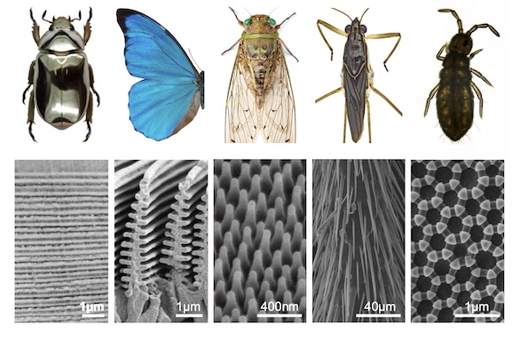
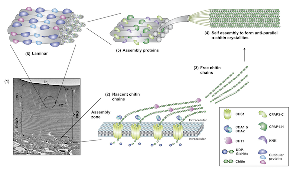

What if insects were merely a matter of cuticle and associated cuticular structures? The cuticle operates as both a skeleton and a skin, carrying a wide array of micro- and nanostructures that provide structural coloration, hydrophobicity, thermoregulation, interaction with microorganisms, to name a few examples. This inherent multifunctionality is enabled by an incredible versatility in materials architecture and properties across insects. Our research group looks into the functions and physical properties of cuticle and associated structures, how they form during development, how they evolve and adapt to changing environments, and how we can use this wealth amount of information to develop new and sustainable bio-inspired materials.
CUTICULAR NANO- AND MICROSTRUCTURES Structural colors are produced by the interaction of light with micro- or nanostructures on the surface or within the insect's cuticle. In butterflies, structural color is responsible for the vivid blue and green colors of the wings of most butterflies. For example, the famous Morpho butterflies get their blue color from light interacting with the 'Christmas tree'-like structures that composed the upper lamina of wing scales. The nanostructures that underlie the structural color are very diverse in butterflies ranging from fine tuned lower lamina thickness to upper lamina and luminal ornamentations. Our goal is to (1) understand the morphogenesis of these biophotonic structures, (2) reconstruct the evolutionary origin of these different types of nanostructures.

CUTICLE BIOCHEMISTRY AND MECHANICAL PROPERTIES Chitin, a polymer of N-acetylglucosamine, is the main component of insect cuticle, and this polymer can bind to a large number of cuticular proteins (CPs) and/or pigments. The biological roles of CPs are still largely unexplored in the field of biology. Our understanding of CPs has been hampered by experimental difficulties because of their large genomic repertoire, essential roles that cause mortality when disrupted, and laborious extraction from the cuticle. Nonetheless, recent studies have shown that CPs play a significant role in conferring mechanical properties (elasticity, stiffness) to the cuticle, building cuticular structures, and resisting external chemical compounds. We are developing new insect models to investigate the functions of CPs both in vivo and in vitro.

BIOINSPIRED SUSTAINABLE, CHITIN-BASED MATERIALS Chitin is the second most abundant organic molecule on Earth after cellulose, and biomimetic manufacturing with chitin is quickly expanding. In collaboration with the Fernandez lab, we successfully created chitosan-based materials with iridescent features (see the video below). We are presently interested in producing chitosan-based materials with a variety of mechanical properties, ranging from extreme hardness to extreme elasticity, by tinkering with cuticular structures and/or cuticle biochemistry.